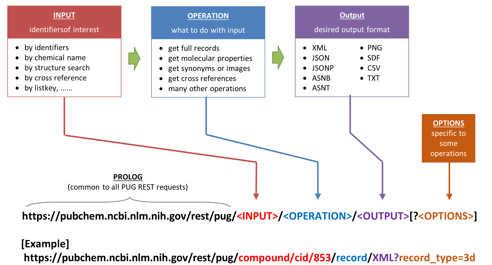
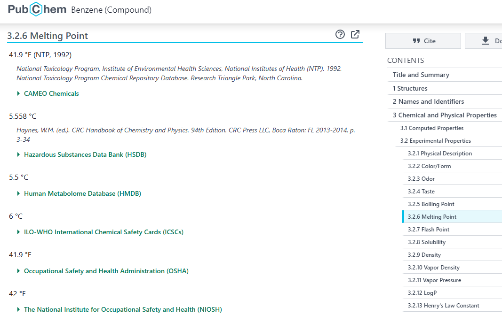
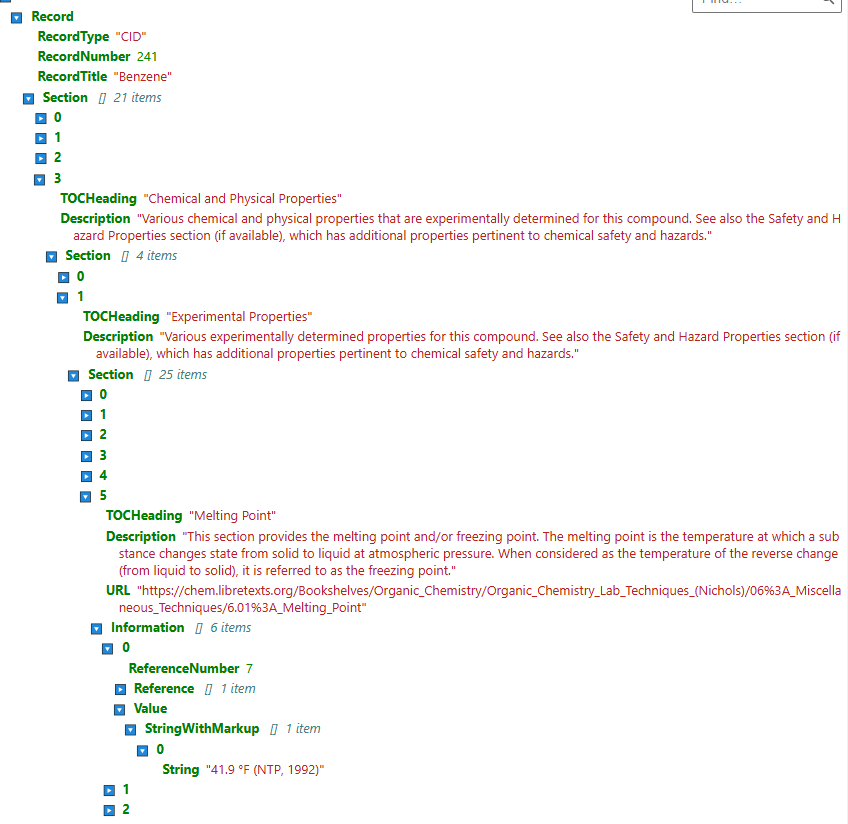

8. APIs as External Data Structures#
1. Application Program Interfaces (APIs)#
APIs allow computers to obtain data from networked databases and web APIs are a valuable way to obtain chemical data
1.1: Brief Overview of APIs#
We will use Application Program Interfaces (APIs) throughout this course as they enable software programs to communicate with each other. The API defines a set of rules that allow the two programs to communicate with each other, and when that communication involves external data structures the API defines:
1. Endpoint (Exposes Data)
The URL where the API listens.
Example:
https://query.wikidata.org/sparql
2. Request/Response Model (How Data is Sent and Received)
Defines the protocol and request method.
REST APIs:
GET,POSTover HTTP.SPARQL APIs: SPARQL Query over HTTP (
GET/POST).Database APIs: SQL queries over TCP/IP.
3. Data Format (How Data is Structured)
REST APIs: JSON, XML, CSV.
SPARQL APIs: SPARQL-JSON, RDF/XML, Turtle, N-Triples.
Databases: Tabular data (Relational Tables).
GraphQL APIs: JSON (Custom queries).
1.2: Overview of API Architectures#
APIs generally follow different architectures, but the most relevant for chemical data retrieval include:
RESTful APIs (Representational State Transfer)#
The most common API architecture for chemical databases.
Work with SQL and NoSQL Databases
Uses standard HTTP methods:
GET: Retrieve dataPOST: Send dataPUT: Update dataDELETE: Remove data
Data is typically returned in JSON, XML, or CSV formats.
Example: PubChem REST API
SOAP APIs (Simple Object Access Protocol)#
Older, more rigid format using XML-based requests.
Less common in modern web services but still used in large, legacy systems.
GraphQL APIs#
Mostly work with NoSQL Databases
Allows users to request specific fields instead of predefined responses.
More flexible than REST but less common in chemical informatics.
SPARQL Endpoints#
Work with RDF/Triple Stores
Used for querying structured chemical databases (e.g., ChEMBL).
Based on semantic web principles.
1.3 Chemical Databases with RESTful APIs#
Database |
Nature of Data |
API Access |
|---|---|---|
Chemical compounds, properties, bioactivity |
||
Bioactive molecules, drug-like properties |
||
Chemical structures, spectral data, identifiers |
||
Structure-based identifier resolution |
||
Protein structures, small molecule interactions |
||
Cross-references between chemical databases |
||
Chemical identifier conversion |
1.4 Chemical Databases with SPARQL Endpoints#
Database |
Nature of Data |
SPARQL Endpoint |
|---|---|---|
Bioactive molecules, drug discovery |
||
Drugs, mechanisms, metabolism |
||
Molecular entities, biological roles |
||
Metabolic and signaling pathways |
||
Protein sequence and functional information |
||
Drug discovery, pharmacology data |
2. Requests Module#
The requests module is a popular Python library for making HTTP requests to interact with web services and REST APIs. It simplifies sending GET, POST, PUT, and DELETE requests while handling cookies, authentication, headers, and timeouts.
2.1: Installing requests from conda-forge#
To install requests using Conda, run:
conda activate YourEnvironmentYouWantToUse
conda install -c conda-forge requests
To verify the installation:
import requests
print(requests.__version__)
2.2: HTTP Request Methods#
These functions are part of the requests module and are used to initiate an HTTP request. When you call one of these methods (like get, post, etc.), you’re instructing your program to communicate with a web API.
Method |
Description |
|---|---|
|
Sends a GET request (retrieves data). |
|
Sends a POST request (submits data). |
|
Sends a PUT request (updates data). |
|
Sends a PATCH request (partially updates data). |
|
Sends a DELETE request (removes data). |
|
Sends a HEAD request (retrieves headers only). |
|
Checks allowed HTTP methods for the given URL. |
|
Generic function for sending any HTTP request. |
2.3: Response Object Methods#
Once you have a Response object (from calling a request method), these are functions available on that object. They help you to process and interpret the response.
Method |
Description |
|---|---|
|
Converts the response body to a JSON object (if applicable). |
|
Raises an HTTP error if the response contains an error code. |
|
Iterates over response data in chunks. |
|
Iterates over response text line by line. |
2.4: Response Object Attributes#
These are the data attributes of the Response object. They provide direct access to various pieces of information that came back from the server.
Attribute |
Description |
|---|---|
|
Returns the HTTP response code (e.g., 200, 404). |
|
Returns the response body as a string. |
|
Returns the response body as raw bytes. |
|
Returns the response headers as a dictionary. |
|
Returns the final URL (useful for redirects). |
|
Returns or sets the response text encoding. |
|
Returns cookies from the response. |
3. PubChem PUG Rest API#
Please note that much of this material is adapted from the first assignment of the 2019 Cheminformatics OLCC.
3.1 The Shortest Code#
If you click the following two links you will get the formula and molecular weight of water
https://pubchem.ncbi.nlm.nih.gov/rest/pug/compound/name/water/property/MolecularFormula/txt
https://pubchem.ncbi.nlm.nih.gov/rest/pug/compound/name/water/property/MolecularWeight/txt With the requests module we can perform the same operation.
import requests
ethanol_MW = requests.get('https://pubchem.ncbi.nlm.nih.gov/rest/pug/compound/name/ethanol/property/MolecularWeight/txt')
print(ethanol_MW.text)
import requests
ethanol_MW = requests.get('https://pubchem.ncbi.nlm.nih.gov/rest/pug/compound/name/ethanol/property/MolecularWeight/txt')
print(ethanol_MW.text)
46.07
3.2 Formulating PUG REST request URLs using variables#
The URL can be broken into 4 components
PROLOG - Common to all PUG REST requests
INPUT - Identifiers of interest
OPERATION - What to do with the input
OUTPUT - Desired Output Format

This can be encoded into four different variables (pugrest, pugin, pugoper, pugout) and combined into a new variable url.
pugrest = "https://pubchem.ncbi.nlm.nih.gov/rest/pug"
pugin = "compound/name/water"
pugoper = "property/MolecularFormula"
pugout = "txt"
url = pugrest + '/' + pugin + '/' + pugoper + '/' + pugout
print(url)
pugrest = "https://pubchem.ncbi.nlm.nih.gov/rest/pug"
pugin = "compound/name/water"
pugoper = "property/MolecularFormula"
pugout = "txt"
url = pugrest + '/' + pugin + '/' + pugoper + '/' + pugout
print(url)
https://pubchem.ncbi.nlm.nih.gov/rest/pug/compound/name/water/property/MolecularFormula/txt
As these are strings we can use the join() function on a list of the variables where the “/” character is the separator
url = "/".join( [pugrest, pugin, pugoper, pugout] )
print(url)
'''
url = "/".join( [pugrest, pugin, pugoper, pugout] )
print(url)
https://pubchem.ncbi.nlm.nih.gov/rest/pug/compound/name/water/property/MolecularFormula/txt
Now that we have the url, we can pass it to the .get function
res = requests.get(url)
print(res.text)
res = requests.get(url)
print(res.text)
H2O
3.3 Making multiple requests with a loop#
Note, the API returns a a string of numeric values and the units were not taken from the api
names = [ 'cytosine', 'benzene', 'motrin', 'aspirin', 'zolpidem' ]
pugrest = "https://pubchem.ncbi.nlm.nih.gov/rest/pug"
pugoper = "property/MolecularWeight"
pugout = "txt"
for myname in names: # loop over each element in the "names" list
pugin = "compound/name/" + myname
url = "/".join( [pugrest, pugin, pugoper, pugout] )
res = requests.get(url)
print(myname, ":", res.text.rstrip(),'g/mol', type(myname))
cytosine : 111.10 g/mol <class 'str'>
benzene : 78.11 g/mol <class 'str'>
motrin : 206.28 g/mol <class 'str'>
aspirin : 180.16 g/mol <class 'str'>
zolpidem : 307.4 g/mol <class 'str'>
Warning: When you make a lot of programmatic access requests using a loop, you should limit your request rate to or below five requests per second. Please read the following document to learn more about PubChem’s usage policies:
https://pubchemdocs.ncbi.nlm.nih.gov/programmatic-access$_RequestVolumeLimitations
Violation of usage policies may result in the user being temporarily blocked from accessing PubChem (or NCBI) resources**
In the for-loop example above, we have only five input chemical names to process, so it is not likely to violate the five-requests-per-second limit. However, if you have thousands of names to process, the above code will exceed the limit (considering that this kind of requests usually finish very quickly). Therefore, the request rate should be adjusted by using the sleep() function in the time module. For simplicity, let’s suppose that you have 12 chemical names to process (in reality, you could have much more to process).
import requests
import time
names = [ 'water', 'benzene', 'methanol', 'ethene', 'ethanol', \
'propene','1-propanol', '2-propanol', 'butadiene', '1-butanol', \
'2-butanol', 'tert-butanol']
pugrest = "https://pubchem.ncbi.nlm.nih.gov/rest/pug"
pugoper = "property/SMILES"
pugout = "txt"
for i in range(len(names)): # loop over each index (position) in the "names" list
pugin = "compound/name/" + names[i] # names[i] = the ith element in the names list.
url = "/".join( [pugrest, pugin, pugoper, pugout] )
res = requests.get(url)
print(names[i], ":", res.text)
if ( i % 5 == 4 ) : # the % is the modulo operator and returns the remainder of a calculation (if i = 4, 9, ...)
time.sleep(1)
water : O
benzene : C1=CC=CC=C1
methanol : CO
ethene : C=C
ethanol : CCO
propene : CC=C
1-propanol : CCCO
2-propanol : CC(C)O
butadiene : C=CC=C
1-butanol : CCCCO
2-butanol : CCC(C)O
tert-butanol : CC(C)(C)O
There are three things noteworthy in the above example (compared to the previous examples with the five chemical name queries).
First, the for loop interates from 0 to [
len(names)− 1], that is, [0, 1, 2, 3, …,11].The variable
iis used (innames[i]) to generate the input part (pugin) of the PUG-REST request URL.The variable
iis used (in theifsentence) to stop the program for one second for every five requests.
It should be noted that the request volumn limit can be lowered through the dynamic traffic control at times of excessive load (https://pubchemdocs.ncbi.nlm.nih.gov/dynamic-request-throttling). Throttling information is provided in the HTTP header response, indicating the system-load state and the per-user limits. Based on this throttling information, the user should moderate the speed at which requests are sent to PubChem.
3.4: Getting multiple properties for a compound#
All the examples we have seen in this notebook retrieved a single molecular property for a single compound (although we were able to get a desired property for a group of compounds using a for loop). However, it is possible to get multiple properties for multiple compounds with a single request.
The following example retrieves the hydrogen-bond donor count, hydrogen-bond acceptor count, XLogP, TPSA for 5 compounds (represented by PubChem Compound IDs (CIDs) in a comma-separated values (CSV) format.
pugrest = "https://pubchem.ncbi.nlm.nih.gov/rest/pug"
pugin = "compound/cid/4485,4499,5026,5734,8082"
pugoper = "property/HBondDonorCount,HBondDonorCount,XLogP,TPSA"
pugout = "csv"
url = "/".join( [pugrest, pugin, pugoper, pugout] ) # Construct the URL
print(url)
print("-" * 30) # Print "-" 30 times (to print a line for readability)
res = requests.get(url)
print(res.text)
https://pubchem.ncbi.nlm.nih.gov/rest/pug/compound/cid/4485,4499,5026,5734,8082/property/HBondDonorCount,HBondDonorCount,XLogP,TPSA/csv
------------------------------
"CID","HBondDonorCount","HBondDonorCount","XLogP","TPSA"
4485,1,1,2.200,110.0
4499,1,1,3.300,110.0
5026,1,1,4.300,123.0
5734,1,1,0.2,94.6
8082,1,1,0.800,12.0
PubChem has a standard time limit of 30 seconds per request. When you try to retrieve too many properties for too many compounds with a single request, it can take longer than the 30-second limit and a time-out error will be returned. Therefore, you may need to split the compound list into smaller chunks and process one chunk at a time.
cids = [ 443422, 72301, 8082, 4485, 5353740, 5282230, 5282138, 1547484, 941361, 5734, \
5494, 5422, 5417, 5290, 5245, 5026, 4746, 4507, 4499, 4497, \
4494, 4474, 4418, 4386, 4009, 4008, 3949, 3926, 3878, 3784, \
3698, 3547, 3546, 3336, 3333, 3236, 3076, 2585, 2520, 2351, \
2312, 2162, 1236, 1234, 292331, 275182, 235244, 108144, 104972, 77157, \
5942250, 5311217, 4564402, 4715169, 5311501]
chunk_size = 10
if ( len(cids) % chunk_size == 0 ) : # check if total number of cids is divisible by 10 with no remainder
num_chunks = len(cids) // chunk_size # sets number of chunks
else : # if divide by 10 results in remainder
num_chunks = len(cids) // chunk_size + 1 # add one more chunk
print("# Number of CIDs:", len(cids) )
print("# Number of chunks:", num_chunks )
# Number of CIDs: 55
# Number of chunks: 6
pugrest = "https://pubchem.ncbi.nlm.nih.gov/rest/pug"
pugoper = "property/HBondDonorCount,HBondAcceptorCount,XLogP,TPSA"
pugout = "csv"
csv = "" #sets a variable called csv to save the comma separated output
for i in range(num_chunks) : # sets number of requests to number of data chunks as determined above
idx1 = chunk_size * i # sets a variable for a moving window of cids to start in a data chunk
idx2 = chunk_size * (i + 1) # sets a variable for a moving window of cids to end in a data chunk
pugin = "compound/cid/" + ",".join([ str(x) for x in cids[idx1:idx2] ]) # build pug input for chunks of data
url = "/".join( [pugrest, pugin, pugoper, pugout] ) # Construct the URL
res = requests.get(url)
if ( i == 0 ) : # if this is the first request, store result in empty csv variable
csv = res.text
else : # if this is a subsequent request, add the request to the csv variable adding a new line between chunks
csv = csv + "\n".join(res.text.split()[1:]) + "\n"
if (i % 5 == 4):
time.sleep(1)
print(csv)
"CID","HBondDonorCount","HBondAcceptorCount","XLogP","TPSA"
443422,0,5,3.1,40.2
72301,0,5,3.2,40.2
8082,1,1,0.800,12.0
4485,1,7,2.200,110.0
5353740,2,5,3.5,76.0
5282230,2,5,3.2,84.9
5282138,1,8,4.400,120.0
1547484,0,2,5.800,6.5
941361,0,4,6.000,6.5
5734,1,5,0.2,94.6
5494,0,6,5.0,57.2
5422,0,8,6.4,61.9
5417,0,5,3.2,40.2
5290,2,5,2.6,62.2
5245,5,8,-3.1,148.0
5026,1,8,4.300,123.0
4746,1,1,6.8,12.0
4507,1,7,2.900,110.0
4499,1,7,3.300,110.0
4497,1,8,3.100,120.0
4494,1,8,2.900,134.0
4474,1,8,3.800,114.0
4418,1,5,4.100,45.2
4386,2,3,4.400,49.3
4009,2,5,3.5,76.0
4008,1,9,5.600,117.0
3949,0,7,4.9,34.2
3926,1,5,6.0,35.6
3878,2,5,1.4,90.7
3784,1,8,4.300,104.0
3698,2,3,-0.2,68.0
3547,1,5,1.0,70.7
3546,3,5,-0.5,132.0
3336,1,1,5.5,12.0
3333,1,5,3.900,64.6
3236,0,2,3.8,20.3
3076,0,6,3.1,84.4
2585,3,5,4.200,75.7
2520,0,6,3.800,64.0
2351,0,3,5.3,15.7
2312,0,2,4.6,12.5
2162,2,7,3.000,99.9
1236,1,8,6.800,114.0
1234,0,7,3.800,73.2
292331,2,3,3.900,49.3
275182,1,8,6.1,72.9
235244,1,8,6.7,72.9
108144,2,5,3.9,117.0
104972,1,6,3.300,72.7
77157,1,4,3.2,49.8
5942250,2,5,3.5,76.0
5311217,1,7,4.500,90.9
4564402,0,4,4.1,45.5
4715169,2,3,-1.6,63.3
5311501,0,4,4.4,43.7
import requests
# PubChem API URL to fetch properties for benzene (CID = 241)
cid = 241
url = f"https://pubchem.ncbi.nlm.nih.gov/rest/pug/compound/cid/{cid}/property/MolecularWeight,SMILES/JSON"
# Make GET request
response = requests.get(url)
# Check response status
if response.status_code == 200:
data = response.json() # Parse JSON response
print(data)
else:
print("Error:", response.status_code)
{'PropertyTable': {'Properties': [{'CID': 241, 'MolecularWeight': '78.11', 'SMILES': 'C1=CC=CC=C1'}]}}
Can you identify the data structures returned by the above script?
4. PubChem PUG View API#
The PUG View API offers a “view” of a compound’s data that mirrors the narrative descriptions on the PubChem website. This includes sections like summaries, descriptions, and other annotations sourced from scientific literature or curated databases. Instead of raw computed values like you get from the PUG API, you get text-based information.
Comparing PUG and PUG View#
PUG API:
Data Type: Computed values, identifiers, molecular properties, etc.
Format: Structured numeric data suitable for computational analysis.
Usage: Ideal when you need precise, algorithm-derived metrics.
PUG View API:
Data Type: Curated, narrative, literature-derived textual information.
Format: Human-readable summaries and descriptions.
Usage: Best for applications where you want to present users with contextual and descriptive content.
4.1: Downloading complete JSON#
In this activity we will download the complete json file for benzene
import requests
import json
import os
import re # For filename sanitization
# Example CID for Benzene
cid = 241
url = f"https://pubchem.ncbi.nlm.nih.gov/rest/pug_view/data/compound/{cid}/JSON"
# Define the directory structure
pubchem_json_dir = os.path.expanduser("~/data/pubchem_data/full_json") # Parent directory
os.makedirs(pubchem_json_dir, exist_ok=True) # Ensure directories exist
# Make GET request
response = requests.get(url)
# Check response status
if response.status_code == 200:
data = response.json()
# Extract the chemical name (title)
chemical_name = data["Record"]["RecordTitle"].lower() # Example: "Benzene"
# Sanitize the filename (remove special characters, spaces)
chemical_name_clean = re.sub(r'[^a-zA-Z0-9_-]', '_', chemical_name) # Replace special chars with "_"
# Construct the full file path
filename = f"{chemical_name_clean}.json"
chemical_json_datapath = os.path.join(pubchem_json_dir, filename)
# Save JSON data to a file
with open(chemical_json_datapath, "w", encoding="utf-8") as f:
json.dump(data, f, indent=4)
print(f"Data saved to {chemical_json_datapath}")
else:
print("Error:", response.status_code)
Data saved to /home/rebelford/data/pubchem_data/full_json/benzene.json
Navigate to the folder /data/pubchem_data/full_json/ and open the file benzene.json (you can do this using the file browser of your jupyter lab and then in another browser window open the PubChem datapage for Benzene, and compare the two

Screenshot of PubChem web interface with melting point data on Benzene

Screen shot showing schema of json file for Benzene that we just downloaded and how to get the first experimental melting point.
4.2 Extract Melting Points#
Here we take the json file generated from pug_view for benzene and extract the melting points from the 6 sources. Note how they have different units.
import json
import os
# Define the path to your JSON file
pubchem_json_dir = os.path.expanduser("~/data/pubchem_data/full_json/")
filename = "benzene.json" # Replace with your actual filename if different
file_path = os.path.join(pubchem_json_dir, filename)
# Open and load the JSON file
with open(file_path, "r", encoding="utf-8") as json_file:
data = json.load(json_file)
# Navigate the JSON structure to find "Melting Point" under "Experimental Properties"
melting_points = []
for section in data["Record"]["Section"]:
if section["TOCHeading"] == "Chemical and Physical Properties":
for subsection in section.get("Section", []):
if subsection["TOCHeading"] == "Experimental Properties":
for prop_section in subsection.get("Section", []):
if prop_section["TOCHeading"] == "Melting Point":
for info in prop_section.get("Information", []):
if "Value" in info and "StringWithMarkup" in info["Value"]:
melting_points.append(info["Value"]["StringWithMarkup"][0]["String"])
# Print extracted melting point values
if melting_points:
print("\nMelting Points (All Available Sources):")
for i, mp in enumerate(melting_points, 1):
print(f"{i}. {mp}")
Melting Points (All Available Sources):
1. 41.9 °F (NTP, 1992)
2. 5.558 °C
3. 5.5 °C
4. 6 °C
5. 41.9 °F
6. 42 °F
4.3 Create Pandas DataFrame of Experimental Properties#
import requests
import json
import os
import pandas as pd
# Define the path to your JSON file
pubchem_json_dir = os.path.expanduser("~/data/pubchem_data/full_json/")
filename = "benzene.json" # Replace with your actual filename if different
file_path = os.path.join(pubchem_json_dir, filename)
# Open and load the JSON file
with open(file_path, "r", encoding="utf-8") as json_file:
data = json.load(json_file)
# Dictionary to store extracted data
property_data = {}
# Navigate the JSON structure to find "Experimental Properties"
for section in data["Record"]["Section"]:
if section["TOCHeading"] == "Chemical and Physical Properties":
for subsection in section.get("Section", []):
if subsection["TOCHeading"] == "Experimental Properties":
for prop_section in subsection.get("Section", []):
property_name = prop_section["TOCHeading"]
values = []
for info in prop_section.get("Information", []):
if "Value" in info and "StringWithMarkup" in info["Value"]:
values.append(info["Value"]["StringWithMarkup"][0]["String"])
# Store in dictionary
property_data[property_name] = values
# Convert extracted data to Pandas DataFrame
df = pd.DataFrame.from_dict(property_data, orient="index").transpose()
# Display the DataFrame in Jupyter Notebook
from IPython.display import display
display(df)
# Save DataFrame to CSV file
csv_path = os.path.expanduser(f"~/data/pubchem_data/cid_{cid}_experimental_properties.csv")
df.to_csv(csv_path, index=False)
print(f"Experimental properties saved to CSV: {csv_path}")
| Physical Description | Color/Form | Odor | Taste | Boiling Point | Melting Point | Flash Point | Solubility | Density | Vapor Density | ... | Viscosity | Heat of Combustion | Heat of Vaporization | Surface Tension | Ionization Potential | Odor Threshold | Refractive Index | Relative Evaporation Rate | Kovats Retention Index | Other Experimental Properties | |
|---|---|---|---|---|---|---|---|---|---|---|---|---|---|---|---|---|---|---|---|---|---|
| 0 | Benzene appears as a clear colorless liquid wi... | Clear, colorless liquid | Aromatic odor | Taste threshold in water is 0.5-4.5 mg/l. | 176.2 °F at 760 mmHg (NTP, 1992) | 41.9 °F (NTP, 1992) | 12 °F (NTP, 1992) | 1 to 5 mg/mL at 64 °F (NTP, 1992) | 0.879 at 68 °F (USCG, 1999) - Less dense than ... | 2.77 (NTP, 1992) - Heavier than air; will sink... | ... | 0.604 mPa.s at 25 °C | -3267.6 kJ/mol (liquid) | 33.83 kJ/mol at 25 °C | 28.22 mN/m at 25 °C | 9.24 eV | Odor Threshold Low: 34.0 [ppm] | Index of refraction: 1.5011 at 20 °C/D | 2.8 (Ether = 1) | None | Conversion factors: 1 mg/cu m = 0.31 ppm; 1 pp... |
| 1 | Gas or Vapor, Liquid; Liquid | Orthorhombic prisms or liquid | Gasoline-like odor; rather pleasant aromatic o... | None | 80.08 °C | 5.558 °C | 12 °F | In water, 1.79X10+3 mg/L at 25 °C | 0.8756 g/cu cm at 20 °C | 2.8 (Air = 1) | ... | None | None | None | None | 9.24 eV | 4.68 PPM | None | None | None | Blood/air partition coefficient is 7.8 |
| 2 | Colorless to light-yellow liquid with an aroma... | Colorless to light-yellow liquid [Note: A soli... | None | None | 80.00 to 81.00 °C. @ 760.00 mm Hg | 5.5 °C | 12 °F (-11 °C) Closed Cup | Miscible with alcohol, chloroform, ether, carb... | SPECIFIC DISPERSION 189.6; DENSITY OF SATURATE... | Relative vapor density (air = 1): 2.7 | ... | None | None | None | None | None | In air: 4.9 mg/cu m (characteristic odor), in ... | None | None | None | Sublimes -30 to 5 °C |
| 3 | Liquid | None | None | None | 80 °C | 6 °C | -11.0 °C (12.2 °F) (Closed cup) | Miscible with ethanol, ethyl ether, acetone, c... | Relative density (water = 1): 0.88 | 2.77 | ... | None | None | None | None | None | distinct odor: 310 mg/cu m= 90 ppm | None | None | None | Heat of fusion = 9.87 KJ/mol |
| 4 | COLOURLESS LIQUID WITH CHARACTERISTIC ODOUR. | None | None | None | 176.2 °F | 41.9 °F | -11 °C c.c. | 1.79 mg/mL | 0.88 | None | ... | None | None | None | None | None | human odor perception: 3.0 mg/cu m=1 ppm | None | None | None | For more Other Experimental Properties (Comple... |
| 5 | Highly flammable colorless to light-yellow liq... | None | None | None | 176 °F | 42 °F | 12 °F | Solubility in water, g/100ml at 25 °C: 0.18 | 0.88 | None | ... | None | None | None | None | None | None | None | None | None | None |
| 6 | Colorless to light-yellow liquid with an aroma... | None | None | None | None | None | 12 °F | 0.07% | None | None | ... | None | None | None | None | None | None | None | None | None | None |
| 7 | Clear, colorless to light yellow liquid at roo... | None | None | None | None | None | None | None | None | None | ... | None | None | None | None | None | None | None | None | None | None |
8 rows × 25 columns
Experimental properties saved to CSV: /home/rebelford/data/pubchem_data/cid_241_experimental_properties.csv
4.4 Create a DataBase with 8 tables#
In this activity we will download and save a json file for the smallest 8 linear alkanes, then convert it to a dataframe and save each as a csv file, and then combine them into a database, with each alkane having a separate table.
import requests
import json
import os
import pandas as pd
import sqlite3
import time
# Define alkanes and their PubChem CIDs
alkanes = {
"methane": 297,
"ethane": 6324,
"propane": 6334,
"butane": 7843,
"pentane": 8003,
"hexane": 8058,
"heptane": 8900,
"octane": 356
}
# Define SQLite database
alkane_properties_db_datapath = os.path.expanduser("~/data/pubchem_data/alkane_properties.db")
os.makedirs(os.path.dirname(alkane_properties_db_datapath), exist_ok=True)
# Connect to SQLite
conn = sqlite3.connect(alkane_properties_db_datapath)
cursor = conn.cursor()
# Create a summary table for all alkanes
cursor.execute("""
CREATE TABLE IF NOT EXISTS alkanes_summary (
id INTEGER PRIMARY KEY AUTOINCREMENT,
alkane TEXT UNIQUE,
cid INTEGER,
FOREIGN KEY(cid) REFERENCES properties(cid)
)
""")
# Iterate through each alkane and fetch data from PubChem
for alkane, cid in alkanes.items():
print(f"Fetching data for {alkane} (CID: {cid})...")
# PubChem API URL
url = f"https://pubchem.ncbi.nlm.nih.gov/rest/pug_view/data/compound/{cid}/JSON"
# Send GET request (with delay to avoid hitting API limits)
response = requests.get(url)
time.sleep(1) # Add delay to avoid excessive requests
if response.status_code == 200:
data = response.json()
# Save full JSON file (for debugging)
json_path = os.path.expanduser(f"~/data/pubchem_data/{alkane}.json")
with open(json_path, "w", encoding="utf-8") as f:
json.dump(data, f, indent=4)
print(f"Data saved to: {json_path}")
# Extract properties
property_data = {}
for section in data["Record"]["Section"]:
if section["TOCHeading"] == "Chemical and Physical Properties":
for subsection in section.get("Section", []):
if subsection["TOCHeading"] == "Experimental Properties":
for prop_section in subsection.get("Section", []):
property_name = prop_section["TOCHeading"]
values = []
for info in prop_section.get("Information", []):
if "Value" in info and "StringWithMarkup" in info["Value"]:
values.append(info["Value"]["StringWithMarkup"][0]["String"])
# Convert numerical properties to float where possible
cleaned_values = []
for v in values:
try:
num_value = float(v.split()[0]) # Extract first numeric value
cleaned_values.append(num_value)
except ValueError:
cleaned_values.append(v) # Keep as string if conversion fails
property_data[property_name] = cleaned_values
# Convert data to Pandas DataFrame
df = pd.DataFrame.from_dict(property_data, orient="index").transpose()
# Save DataFrame as CSV (optional)
csv_path = os.path.expanduser(f"~/data/pubchem_data/{alkane}_experimental_properties.csv")
df.to_csv(csv_path, index=False)
print(f"Experimental properties saved to CSV: {csv_path}")
# Create SQLite table for this alkane
create_table_query = f"""
CREATE TABLE IF NOT EXISTS {alkane} (
id INTEGER PRIMARY KEY AUTOINCREMENT,
property TEXT,
value TEXT
)
"""
cursor.execute(create_table_query)
# Insert data into SQLite table
for prop, values in property_data.items():
for value in values:
cursor.execute(f"INSERT INTO {alkane} (property, value) VALUES (?, ?)", (prop, value))
# Add entry to summary table
cursor.execute("INSERT OR IGNORE INTO alkanes_summary (alkane, cid) VALUES (?, ?)", (alkane, cid))
print(f"Data for {alkane} stored in SQLite.")
else:
print(f"Error retrieving data for {alkane}: {response.status_code}")
# Commit and close SQLite connection
conn.commit()
conn.close()
print("All data stored successfully in SQLite.")
Fetching data for methane (CID: 297)...
Data saved to: /home/rebelford/data/pubchem_data/methane.json
Experimental properties saved to CSV: /home/rebelford/data/pubchem_data/methane_experimental_properties.csv
Data for methane stored in SQLite.
Fetching data for ethane (CID: 6324)...
Data saved to: /home/rebelford/data/pubchem_data/ethane.json
Experimental properties saved to CSV: /home/rebelford/data/pubchem_data/ethane_experimental_properties.csv
Data for ethane stored in SQLite.
Fetching data for propane (CID: 6334)...
Data saved to: /home/rebelford/data/pubchem_data/propane.json
Experimental properties saved to CSV: /home/rebelford/data/pubchem_data/propane_experimental_properties.csv
Data for propane stored in SQLite.
Fetching data for butane (CID: 7843)...
Data saved to: /home/rebelford/data/pubchem_data/butane.json
Experimental properties saved to CSV: /home/rebelford/data/pubchem_data/butane_experimental_properties.csv
Data for butane stored in SQLite.
Fetching data for pentane (CID: 8003)...
Data saved to: /home/rebelford/data/pubchem_data/pentane.json
Experimental properties saved to CSV: /home/rebelford/data/pubchem_data/pentane_experimental_properties.csv
Data for pentane stored in SQLite.
Fetching data for hexane (CID: 8058)...
Data saved to: /home/rebelford/data/pubchem_data/hexane.json
Experimental properties saved to CSV: /home/rebelford/data/pubchem_data/hexane_experimental_properties.csv
Data for hexane stored in SQLite.
Fetching data for heptane (CID: 8900)...
Data saved to: /home/rebelford/data/pubchem_data/heptane.json
Experimental properties saved to CSV: /home/rebelford/data/pubchem_data/heptane_experimental_properties.csv
Data for heptane stored in SQLite.
Fetching data for octane (CID: 356)...
Data saved to: /home/rebelford/data/pubchem_data/octane.json
Experimental properties saved to CSV: /home/rebelford/data/pubchem_data/octane_experimental_properties.csv
Data for octane stored in SQLite.
All data stored successfully in SQLite.
print df head#
Now lets print the head of the dataframe, and note how we lost the units
print(df.head())
Physical Description Color/Form \
0 N-octane is a colorless liquid with an odor of... Colorless liquid
1 Liquid; Gas or Vapor Clear liquid
2 Colorless liquid with a gasoline-like odor; [N... None
3 Liquid None
4 COLOURLESS LIQUID WITH CHARACTERISTIC ODOUR. None
Odor Boiling Point Melting Point Flash Point \
0 Gasoline-like 258.1 -70.2 56.0
1 None 125.62 -56.73 56.0
2 None 125.0 -56.8 72.0
3 None 126.0 -56.8 13.0
4 None 258.0 -70.0 56.0
Solubility \
0 0.00007
1 In water, 0.66 mg/L at 25 °C
2 Soluble in ethyl ether; miscible with ethanol,...
3 Miscible with benzene, petroleum ether, gasoli...
4 0.00066
Density \
0 0.703
1 0.6986
2 Relative density (water = 1): 0.70
3 0.7
4 0.7
Vapor Density \
0 3.86
1 Relative vapor density (air = 1): 3.94
2 None
3 None
4 None
Vapor Pressure ... Viscosity \
0 10.0 ... 0.5151
1 14.1 ... None
2 14.1 ... None
3 Vapor pressure, kPa at 20 °C: 1.33 ... None
4 10.0 ... None
Corrosivity \
0 Will attack some forms of plastics, rubber, an...
1 None
2 None
3 None
4 None
Heat of Combustion Heat of Vaporization \
0 1,302.7 kg cal/g mol wt at 760 mm Hg and 20 °C 41.49
1 None None
2 None None
3 None None
4 None None
Surface Tension Ionization Potential Odor Threshold \
0 21.14 9.82 Odor Threshold Low: 15.0 [ppm]
1 None 9.82 4.0
2 None None 150.0
3 None None 725.0
4 None None None
Refractive Index Kovats Retention Index \
0 Index of refraction: 1.3944 at 25 °C/D None
1 Index of refraction: 1.3974 at 20 °C None
2 None None
3 None None
4 None None
Other Experimental Properties
0 Conversion factor: 1 ppm = 4.67 mg/cu m
1 Ionization potential: 9.9 eV
2 Freezing point: -56.5 °C
3 Dipole moment: 0
4 For more Other Experimental Properties (Comple...
[5 rows x 23 columns]
Print database tables#
import sqlite3
conn = sqlite3.connect(alkane_properties_db_datapath)
cursor = conn.cursor()
cursor.execute("SELECT name FROM sqlite_master WHERE type='table';")
tables = cursor.fetchall()
print("Tables in the database:", tables)
conn.close()
Tables in the database: [('alkanes_summary',), ('sqlite_sequence',), ('methane',), ('ethane',), ('propane',), ('butane',), ('pentane',), ('hexane',), ('heptane',), ('octane',)]
Print field details for each table#
import sqlite3
# Replace with the actual path to your database file
#db_path = "alkane_properties_db_datapath"
conn = sqlite3.connect(alkane_properties_db_datapath)
cursor = conn.cursor()
# Retrieve the list of tables from sqlite_master
cursor.execute("SELECT name FROM sqlite_master WHERE type='table'")
tables = cursor.fetchall()
for table in tables:
table_name = table[0]
print(f"Table: {table_name}")
# Get information about the table's columns
cursor.execute(f"PRAGMA table_info({table_name})")
columns = cursor.fetchall()
if columns:
print("Fields:")
for col in columns:
# col returns: (cid, name, type, notnull, dflt_value, pk)
cid, name, col_type, notnull, dflt_value, pk = col
print(f" - {name} ({col_type})")
else:
print(" No column information available.")
print() # Newline for better separation
conn.close()
Table: alkanes_summary
Fields:
- id (INTEGER)
- alkane (TEXT)
- cid (INTEGER)
Table: sqlite_sequence
Fields:
- name ()
- seq ()
Table: methane
Fields:
- id (INTEGER)
- property (TEXT)
- value (TEXT)
Table: ethane
Fields:
- id (INTEGER)
- property (TEXT)
- value (TEXT)
Table: propane
Fields:
- id (INTEGER)
- property (TEXT)
- value (TEXT)
Table: butane
Fields:
- id (INTEGER)
- property (TEXT)
- value (TEXT)
Table: pentane
Fields:
- id (INTEGER)
- property (TEXT)
- value (TEXT)
Table: hexane
Fields:
- id (INTEGER)
- property (TEXT)
- value (TEXT)
Table: heptane
Fields:
- id (INTEGER)
- property (TEXT)
- value (TEXT)
Table: octane
Fields:
- id (INTEGER)
- property (TEXT)
- value (TEXT)
Extract first 15 values of each table#
import sqlite3
# Replace with the actual path to your database file
#db_path = "alkane_properties_db_datapath"
conn = sqlite3.connect(alkane_properties_db_datapath)
cursor = conn.cursor()
# Retrieve list of tables
cursor.execute("SELECT name FROM sqlite_master WHERE type='table'")
tables = cursor.fetchall()
for table in tables:
table_name = table[0]
print(f"Table: {table_name}")
# Optionally, print column headers:
cursor.execute(f"PRAGMA table_info({table_name})")
columns_info = cursor.fetchall()
if columns_info:
columns = [col[1] for col in columns_info] # col[1] is the column name
print("\t".join(columns))
# Get the first 5 rows
cursor.execute(f"SELECT * FROM {table_name} LIMIT 15")
rows = cursor.fetchall()
for row in rows:
print(row)
print() # extra newline for clarity between tables
conn.close()
Table: alkanes_summary
id alkane cid
(1, 'methane', 297)
(2, 'ethane', 6324)
(3, 'propane', 6334)
(4, 'butane', 7843)
(5, 'pentane', 8003)
(6, 'hexane', 8058)
(7, 'heptane', 8900)
(8, 'octane', 356)
Table: sqlite_sequence
name seq
('methane', 456)
('alkanes_summary', 64)
('ethane', 400)
('propane', 592)
('butane', 552)
('pentane', 608)
('hexane', 600)
('heptane', 552)
('octane', 584)
Table: methane
id property value
(1, 'Physical Description', 'Methane is a colorless odorless gas. It is also known as marsh gas or methyl hydride. It is easily ignited. The vapors are lighter than air. Under prolonged exposure to fire or intense heat the containers may rupture violently and rocket. It is used in making other chemicals and as a constituent of the fuel, natural gas.')
(2, 'Physical Description', 'Methane is a colorless odorless gas. It is also known as marsh gas or methyl hydride. It is easily ignited. The vapors are lighter than air. Under prolonged exposure to fire or intense heat the containers may rupture violently and rocket. It is used in making other chemicals and as a constituent of the fuel, natural gas.')
(3, 'Physical Description', 'Methane, refrigerated liquid (cryogenic liquid) is a colorless odorless liquid. Flammable. Water insoluble.')
(4, 'Physical Description', 'Natural gas, refrigerated liquid (cryogenic liquid) appears as a flammable liquefied gaseous mixture of straight chain hydrocarbons, predominately methane.')
(5, 'Physical Description', 'Natural gas, [compressed] appears as a flammable gaseous mixture of straight chain hydrocarbons, predominately compressed methane.')
(6, 'Physical Description', 'Gas or Vapor; Liquid')
(7, 'Physical Description', 'Colorless, odorless gas; [Merck Index] Vapor density = 0.554 (lighter than air); [HSDB]')
(8, 'Physical Description', 'Liquid')
(9, 'Physical Description', 'COLOURLESS ODOURLESS COMPRESSED OR LIQUEFIED GAS.')
(10, 'Color/Form', 'Colorless gas')
(11, 'Odor', 'Odorless')
(12, 'Odor', 'Weak odor')
(13, 'Taste', 'Tasteless')
(14, 'Boiling Point', '-258.0')
(15, 'Boiling Point', '-258.7')
Table: ethane
id property value
(1, 'Physical Description', 'Ethane appears as a colorless odorless gas. It is easily ignited. The vapors are heavier than air. It can asphyxiate by the displacement of air. Under prolonged exposure to fire or intense heat the containers may rupture violently and rocket. Contact with the liquid may cause frostbite.')
(2, 'Physical Description', 'Ethane, refrigerated liquid appears as a colorless odorless very cold liquid. Boils at -88.6 °C. Easily ignited and a flame can flash back to the source of a leak very easily. Vapors are heavier than air. Vapors can asphyxiate by the displacement of air from enclosed spaces. Direct contact can cause frostbite. Contact of very cold liquid with water may result in vigorous or violent boiling. If the water is hot, there is the possibility that a liquid "superheat" explosion may occur. Pressures may build to dangerous levels if liquid gas contacts water in a closed container. Under prolonged exposure to fire or intense heat the containers may rupture violently and rocket. Used in manufacturing other chemicals.')
(3, 'Physical Description', 'Liquid; Gas or Vapor')
(4, 'Physical Description', 'Colorless, odorless gas; [Merck Index]')
(5, 'Physical Description', 'COLOURLESS COMPRESSED LIQUEFIED GAS. ODOURLESS WHEN PURE.')
(6, 'Color/Form', 'Colorless gas')
(7, 'Odor', 'Odorless')
(8, 'Boiling Point', '-127.5')
(9, 'Boiling Point', '-88.6')
(10, 'Boiling Point', '-89.0')
(11, 'Melting Point', '-279.9')
(12, 'Melting Point', '-182.794')
(13, 'Melting Point', '-183.0')
(14, 'Flash Point', '-211.0')
(15, 'Flash Point', '-211.0')
Table: propane
id property value
(1, 'Physical Description', 'Propane appears as a colorless gas with a faint petroleum-like odor. It is shipped as a liquefied gas under its vapor pressure. For transportation it may be stenched. Contact with the unconfined liquid can cause frostbite by evaporative cooling. Easily ignited. The vapors are heavier than air and a flame can flash back to the source of leak very easily. The leak may be either a liquid or vapor leak. The vapors can asphyxiate by the displacement of air. Under prolonged exposure to fire or heat the containers may rupture violently and rocket.')
(2, 'Physical Description', 'NKRA; Gas or Vapor; Gas or Vapor, Liquid; Liquid')
(3, 'Physical Description', 'Colourless gas or liquid with mild, characteristic odour')
(4, 'Physical Description', 'Colorless, odorless gas. [Note: A foul-smelling odorant is often added when used for fuel purposes. Shipped as a liquefied compressed gas.]; [NIOSH] Vapor density = 1.56 (heavier than air); [HSDB]')
(5, 'Physical Description', 'Liquid')
(6, 'Physical Description', 'ODOURLESS COLOURLESS COMPRESSED LIQUEFIED GAS.')
(7, 'Physical Description', 'Colorless, odorless gas.')
(8, 'Physical Description', 'Colorless, odorless gas. [Note: A foul-smelling odorant is often added when used for fuel purposes. Shipped as a liquefied compressed gas.]')
(9, 'Color/Form', 'Colorless gas [Shipped as a liquefied compressed gas].')
(10, 'Odor', 'Odorless [Note: A foul smelling odorant is often added when used for fuel purposes].')
(11, 'Boiling Point', '-43.8')
(12, 'Boiling Point', '-42.1')
(13, 'Boiling Point', '-42.0')
(14, 'Boiling Point', '-44.0')
(15, 'Boiling Point', '-44.0')
Table: butane
id property value
(1, 'Physical Description', 'Butane is a colorless gas with a faint petroleum-like odor. For transportation it may be stenched. It is shipped as a liquefied gas under its vapor pressure. Contact with the liquid can cause frostbite. It is easily ignited. Its vapors are heavier than air. Any leak can be either liquid or vapor. Under prolonged exposure to fire or intense heat the containers may rupture violently and rocket. It is used as a fuel, an aerosol propellant, in cigarette lighters, and to make other chemicals.')
(2, 'Physical Description', 'Gas or Vapor, Liquid; Liquid; NKRA; Gas or Vapor')
(3, 'Physical Description', 'Colourless gas or liquid with mild, characteristic odour')
(4, 'Physical Description', 'Colorless gas with a gasoline-like or natural gas odor; Note: Shipped as a liquefied compressed gas. A liquid below 31 degrees F; [NIOSH] Vapor density = 2.07 (heavier than air); [HSDB]')
(5, 'Physical Description', 'ODOURLESS COLOURLESS COMPRESSED LIQUEFIED GAS.')
(6, 'Physical Description', 'Colorless gas with a gasoline-like or natural gas odor.')
(7, 'Physical Description', 'Colorless gas with a gasoline-like or natural gas odor. [Note: Shipped as a liquefied compressed gas. A liquid below 31 °F.]')
(8, 'Color/Form', 'Colorless gas [Note: Shipped as a liquefied compressed gas. A liquid below 31 degrees F]')
(9, 'Odor', 'Faint, disagreeable odor')
(10, 'Boiling Point', '31.1')
(11, 'Boiling Point', '-0.5')
(12, 'Boiling Point', '-0.5')
(13, 'Boiling Point', '31.0')
(14, 'Boiling Point', '31.0')
(15, 'Melting Point', '-217.1')
Table: pentane
id property value
(1, 'Physical Description', 'N-pentane appears as a clear colorless liquid with a petroleum-like odor. Flash point 57 °F. Boiling point 97 °F. Less dense than water and insoluble in water. Hence floats on water. Vapors are heavier than air.')
(2, 'Physical Description', 'Liquid; Pellets or Large Crystals; Gas or Vapor')
(3, 'Physical Description', 'Colorless liquid with a gasoline-like odor; Note: A gas above 97 degrees F. May be utilized as a fuel; [NIOSH] Clear colorless liquid; [Sigma-Aldrich MSDS]')
(4, 'Physical Description', 'Liquid')
(5, 'Physical Description', 'COLOURLESS LIQUID WITH CHARACTERISTIC ODOUR.')
(6, 'Physical Description', 'Colorless liquid with a gasoline-like odor.')
(7, 'Physical Description', 'Colorless liquid with a gasoline-like odor. [Note: A gas above 97 °F. May be utilized as a fuel.]')
(8, 'Color/Form', 'Colorless liquid [Note: A gas above 97 degrees F. May be utilized as a fuel].')
(9, 'Odor', 'Pleasant')
(10, 'Odor', 'Gasoline-like odor')
(11, 'Boiling Point', '97.0')
(12, 'Boiling Point', '36.06')
(13, 'Boiling Point', '36.0')
(14, 'Boiling Point', '36.0')
(15, 'Boiling Point', '97.0')
Table: hexane
id property value
(1, 'Physical Description', 'N-hexane is a clear colorless liquids with a petroleum-like odor. Flash points -9 °F. Less dense than water and insoluble in water. Vapors heavier than air. Used as a solvent, paint thinner, and chemical reaction medium.')
(2, 'Physical Description', 'Other Solid; Gas or Vapor, Liquid; Liquid')
(3, 'Physical Description', 'Colorless liquid with a gasoline-like odor; [NIOSH]')
(4, 'Physical Description', 'Liquid')
(5, 'Physical Description', 'VOLATILE COLOURLESS LIQUID WITH CHARACTERISTIC ODOUR.')
(6, 'Physical Description', 'Colorless liquid with a gasoline-like odor.')
(7, 'Physical Description', 'Colorless liquid with a gasoline-like odor.')
(8, 'Color/Form', 'Liquid')
(9, 'Color/Form', 'Colorless, very volatile liquid')
(10, 'Odor', 'Gasoline-like odor')
(11, 'Boiling Point', '156.0')
(12, 'Boiling Point', '68.73')
(13, 'Boiling Point', '68.7')
(14, 'Boiling Point', '69.0')
(15, 'Boiling Point', '156.0')
Table: heptane
id property value
(1, 'Physical Description', 'N-heptane is a clear colorless liquids with a petroleum-like odor. Flash point 25 °F. Less dense than water and insoluble in water. Vapors heavier than air.')
(2, 'Physical Description', 'Liquid')
(3, 'Physical Description', 'Colorless liquid with a gasoline-like odor; [NIOSH]')
(4, 'Physical Description', 'Liquid')
(5, 'Physical Description', 'VOLATILE COLOURLESS LIQUID WITH CHARACTERISTIC ODOUR.')
(6, 'Physical Description', 'Colorless liquid with a gasoline-like odor.')
(7, 'Physical Description', 'Colorless liquid with a gasoline-like odor.')
(8, 'Color/Form', 'Colorless liquid')
(9, 'Odor', 'Gasoline-like odor')
(10, 'Boiling Point', '209.1')
(11, 'Boiling Point', '98.38')
(12, 'Boiling Point', '98.0')
(13, 'Boiling Point', '98.4')
(14, 'Boiling Point', '209.0')
(15, 'Boiling Point', '209.0')
Table: octane
id property value
(1, 'Physical Description', 'N-octane is a colorless liquid with an odor of gasoline. Less dense than water and insoluble in water. Hence floats on water. Produces irritating vapor.')
(2, 'Physical Description', 'Liquid; Gas or Vapor')
(3, 'Physical Description', 'Colorless liquid with a gasoline-like odor; [NIOSH]')
(4, 'Physical Description', 'Liquid')
(5, 'Physical Description', 'COLOURLESS LIQUID WITH CHARACTERISTIC ODOUR.')
(6, 'Physical Description', 'Colorless liquid with a gasoline-like odor.')
(7, 'Physical Description', 'Colorless liquid with a gasoline-like odor.')
(8, 'Color/Form', 'Colorless liquid')
(9, 'Color/Form', 'Clear liquid')
(10, 'Odor', 'Gasoline-like')
(11, 'Boiling Point', '258.1')
(12, 'Boiling Point', '125.62')
(13, 'Boiling Point', '125.0')
(14, 'Boiling Point', '126.0')
(15, 'Boiling Point', '258.0')
import sqlite3
# Connect to SQLite
db_path = os.path.expanduser("~/data/pubchem_data/alkane_properties.db")
conn = sqlite3.connect(db_path)
cursor = conn.cursor()
highest_bp = None
highest_bp_alkane = None
# Loop through each alkane table to find boiling points
for alkane in ["methane", "ethane", "propane", "butane", "pentane", "hexane", "heptane", "octane"]:
query = f"""
SELECT value FROM {alkane}
WHERE property = 'Boiling Point'
"""
cursor.execute(query)
boiling_points = cursor.fetchall()
for bp in boiling_points:
try:
bp_value = float(bp[0]) # ✅ No need to split, it's already a float
if highest_bp is None or bp_value > highest_bp:
highest_bp = bp_value
highest_bp_alkane = alkane
except ValueError:
pass # Ignore invalid values
# Display the correct highest boiling point
if highest_bp_alkane:
print(f"\nThe alkane with the highest boiling point is: {highest_bp_alkane.capitalize()} ({highest_bp})")
else:
print("No valid boiling point data found.")
# Close connection
conn.close()
The alkane with the highest boiling point is: Octane (258.1)
Query each table for boiling points#
*Note, without units this data is uesless and needs to be cleaned up!
import sqlite3
# Connect to SQLite
db_path = os.path.expanduser("~/data/pubchem_data/alkane_properties.db")
conn = sqlite3.connect(db_path)
cursor = conn.cursor()
# Check stored boiling points
print("\nStored Boiling Points in SQLite:\n")
for alkane in ["methane", "ethane", "propane", "butane", "pentane", "hexane", "heptane", "octane"]:
query = f"""
SELECT property, value FROM {alkane}
WHERE property = 'Boiling Point'
"""
cursor.execute(query)
results = cursor.fetchall()
print(f"{alkane.capitalize()} Boiling Points:")
for row in results:
print(f" - {row[1]}") # Should print only numeric values in °C
print("-" * 40)
# Close connection
conn.close()
Stored Boiling Points in SQLite:
Methane Boiling Points:
- -258.0
- -258.7
- -161.5
- -161.0
- -258.0
- -258.7
- -161.5
- -161.0
- -258.0
- -258.7
- -161.5
- -161.0
- -258.0
- -258.7
- -161.5
- -161.0
- -258.0
- -258.7
- -161.5
- -161.0
- -258.0
- -258.7
- -161.5
- -161.0
- -258.0
- -258.7
- -161.5
- -161.0
- -258.0
- -258.7
- -161.5
- -161.0
----------------------------------------
Ethane Boiling Points:
- -127.5
- -88.6
- -89.0
- -127.5
- -88.6
- -89.0
- -127.5
- -88.6
- -89.0
- -127.5
- -88.6
- -89.0
- -127.5
- -88.6
- -89.0
- -127.5
- -88.6
- -89.0
- -127.5
- -88.6
- -89.0
- -127.5
- -88.6
- -89.0
----------------------------------------
Propane Boiling Points:
- -43.8
- -42.1
- -42.0
- -44.0
- -44.0
- -43.8
- -42.1
- -42.0
- -44.0
- -44.0
- -43.8
- -42.1
- -42.0
- -44.0
- -44.0
- -43.8
- -42.1
- -42.0
- -44.0
- -44.0
- -43.8
- -42.1
- -42.0
- -44.0
- -44.0
- -43.8
- -42.1
- -42.0
- -44.0
- -44.0
- -43.8
- -42.1
- -42.0
- -44.0
- -44.0
- -43.8
- -42.1
- -42.0
- -44.0
- -44.0
----------------------------------------
Butane Boiling Points:
- 31.1
- -0.5
- -0.5
- 31.0
- 31.0
- 31.1
- -0.5
- -0.5
- 31.0
- 31.0
- 31.1
- -0.5
- -0.5
- 31.0
- 31.0
- 31.1
- -0.5
- -0.5
- 31.0
- 31.0
- 31.1
- -0.5
- -0.5
- 31.0
- 31.0
- 31.1
- -0.5
- -0.5
- 31.0
- 31.0
- 31.1
- -0.5
- -0.5
- 31.0
- 31.0
- 31.1
- -0.5
- -0.5
- 31.0
- 31.0
----------------------------------------
Pentane Boiling Points:
- 97.0
- 36.06
- 36.0
- 36.0
- 97.0
- 97.0
- 97.0
- 36.06
- 36.0
- 36.0
- 97.0
- 97.0
- 97.0
- 36.06
- 36.0
- 36.0
- 97.0
- 97.0
- 97.0
- 36.06
- 36.0
- 36.0
- 97.0
- 97.0
- 97.0
- 36.06
- 36.0
- 36.0
- 97.0
- 97.0
- 97.0
- 36.06
- 36.0
- 36.0
- 97.0
- 97.0
- 97.0
- 36.06
- 36.0
- 36.0
- 97.0
- 97.0
- 97.0
- 36.06
- 36.0
- 36.0
- 97.0
- 97.0
----------------------------------------
Hexane Boiling Points:
- 156.0
- 68.73
- 68.7
- 69.0
- 156.0
- 156.0
- 156.0
- 68.73
- 68.7
- 69.0
- 156.0
- 156.0
- 156.0
- 68.73
- 68.7
- 69.0
- 156.0
- 156.0
- 156.0
- 68.73
- 68.7
- 69.0
- 156.0
- 156.0
- 156.0
- 68.73
- 68.7
- 69.0
- 156.0
- 156.0
- 156.0
- 68.73
- 68.7
- 69.0
- 156.0
- 156.0
- 156.0
- 68.73
- 68.7
- 69.0
- 156.0
- 156.0
- 156.0
- 68.73
- 68.7
- 69.0
- 156.0
- 156.0
----------------------------------------
Heptane Boiling Points:
- 209.1
- 98.38
- 98.0
- 98.4
- 209.0
- 209.0
- 209.1
- 98.38
- 98.0
- 98.4
- 209.0
- 209.0
- 209.1
- 98.38
- 98.0
- 98.4
- 209.0
- 209.0
- 209.1
- 98.38
- 98.0
- 98.4
- 209.0
- 209.0
- 209.1
- 98.38
- 98.0
- 98.4
- 209.0
- 209.0
- 209.1
- 98.38
- 98.0
- 98.4
- 209.0
- 209.0
- 209.1
- 98.38
- 98.0
- 98.4
- 209.0
- 209.0
- 209.1
- 98.38
- 98.0
- 98.4
- 209.0
- 209.0
----------------------------------------
Octane Boiling Points:
- 258.1
- 125.62
- 125.0
- 126.0
- 258.0
- 258.0
- 258.1
- 125.62
- 125.0
- 126.0
- 258.0
- 258.0
- 258.1
- 125.62
- 125.0
- 126.0
- 258.0
- 258.0
- 258.1
- 125.62
- 125.0
- 126.0
- 258.0
- 258.0
- 258.1
- 125.62
- 125.0
- 126.0
- 258.0
- 258.0
- 258.1
- 125.62
- 125.0
- 126.0
- 258.0
- 258.0
- 258.1
- 125.62
- 125.0
- 126.0
- 258.0
- 258.0
- 258.1
- 125.62
- 125.0
- 126.0
- 258.0
- 258.0
----------------------------------------
The issue is we lost the units
Acknowledgements#
This content was developed with assistance from Perplexity AI and Chat GPT. Multiple queries were made during the Fall 2024 and the Spring 2025.
The PUG-rest API content was borrowed extensively from the 2019 Cheminformatics OLCC LibreTexts and special acknowledgement goes to Sunghwan Kim for developing the original content.